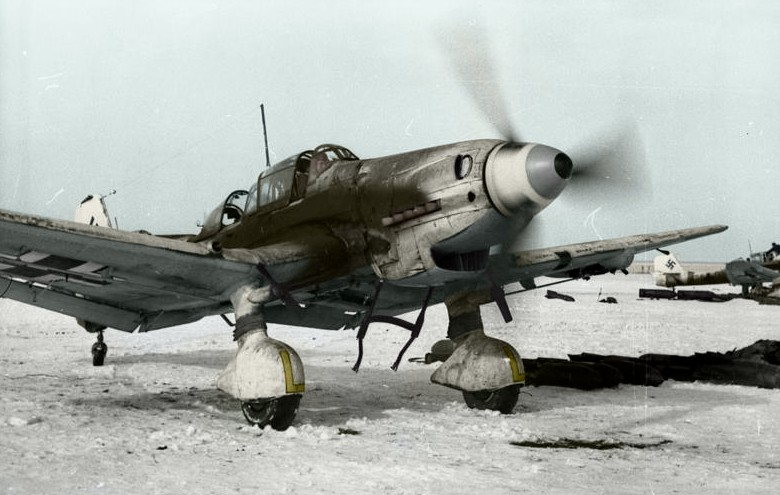

País: Alemanha Nazista
Tipo: Bombardeiro de mergulho / Avião de apoio ao solo
Fabricante: Junkers Flugzeug- und Motorenwerke AG
Ano: 1935
Velocidade máxima: 410 km/h
Alcance: 1.535 km
Teto de serviço: 8.000 m
O Junkers Ju-87 Stuka foi o símbolo do Blitzkrieg alemão — um bombardeiro de mergulho lento e vulnerável que se tornou uma das armas psicológicas mais eficazes da Segunda Guerra Mundial. Equipado com as famosas sirenes "trombetas de Jericó" montadas no trem de pouso, seu uivo aterrorizante ao mergulhar em direção ao alvo causava pânico em tropas e civis muito antes de qualquer bomba ser lançada.